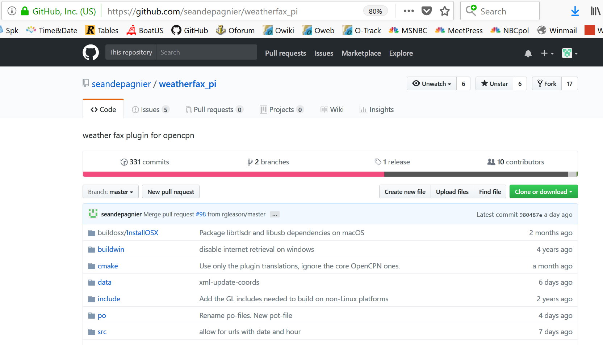
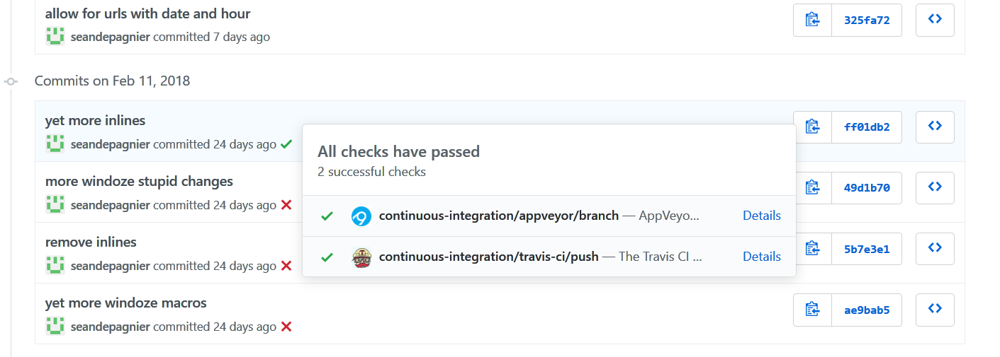

CI: Advanced Debug Tips
Further reading: AppVeyor - A good continuous integration system is a joy to behold
How to use CI Tools: Appveyor
Bdbcat has responded to several questions, explaining how these features should be used.
1. How to get Alpha/Beta Testers familiar with Github and locating those compiled files?
-
When we are actually in Beta test, we will describe the process and condition of the CI artifacts.
-
We may use the artifacts then, but probably not.
-
We have enough trouble tracking issues with one "official" Beta location.
-
Using the almost daily updates of CI product for Beta testing would be a nightmare.
-
Best to think of the usefulness of CI as we are right now: In Alpha test of some new features, some of which features are known to be incomplete or even with known heinous errors.
2. Are these eventually going to be the source for the Website Downloads page?
-
No. The CI artifacts result from building the current github HEAD.
-
This, in general, will not be the same as the in-production Release point.
Summary
Testing a CI Product is like sneaking a spoon-sip of the dinner simmering on the stove while Mom is not looking. She knows it needs salt, and is way too hot to eat yet. If you drop dead immediately, she wants to know about it. Otherwise, she wants to not hear too many comments. Wait until it comes to the table. Meanwhile, go outside and play….
Dave
How CI Tools work
Using an example from Sean’s Weatherfax plugin.
For Windows, use Appveyor.
2. Click on the Code Tab
Select the "Branch" you want to be on, most of the time it will be "master"

5. Click on the Green Check at the end
A popup for the Continuous Integration Links for TravisCI and AppVeyor come up.
